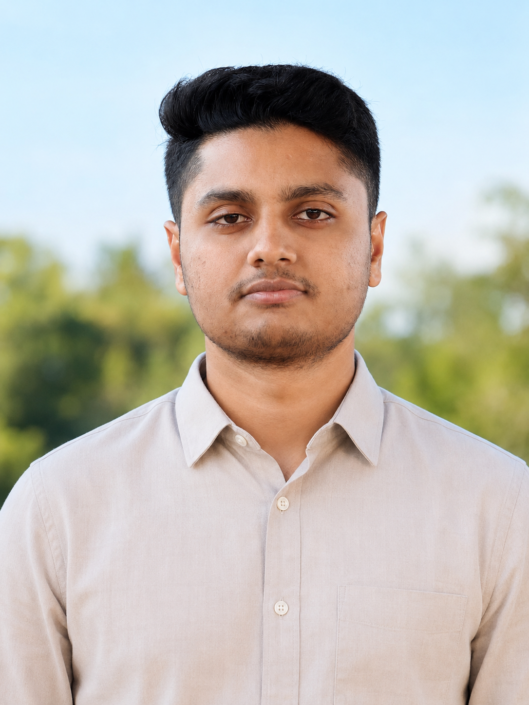

PERSONAL PROFILE
A simple, family-oriented and professionally established individual who believes in honesty, responsibility, continuous self-improvement and building a peaceful family based on mutual respect and understanding.

Assalamu Alaikum. My name is Md. Ariful Islam Mihad. I was born and raised in Pabna and currently work as an Independent Security Researcher. I believe life becomes meaningful when it is built upon honesty, responsibility, kindness and continuous learning. Professionally, I enjoy solving complex security challenges, while personally I value family relationships, respect, sincerity and maintaining a balanced lifestyle. Outside of work, I enjoy travelling, fitness, learning new technologies and spending quality time with my family. For me, marriage is a lifelong companionship where trust, understanding, patience and mutual support are the strongest foundations.
Government Shaheed Bulbul College, Pabna
Science • Rajshahi Board • GPA 3.75R. M. Academy, Pabna
Science • Rajshahi Board • GPA 4.83I currently work as an Independent Security Researcher, where I help organizations identify security vulnerabilities in their web applications and online systems through responsible vulnerability disclosure. Rather than building software, my role is to discover security weaknesses before malicious attackers can exploit them. This profession allows me to collaborate with international organizations, continuously improve my knowledge, and contribute to creating a safer digital environment. Alhamdulillah, through dedication, continuous learning and consistency, I have been able to establish a stable professional career in this field.
Official recognition, commemorative medal and exclusive swag.
Ranked among the Top 300 Security Researchers worldwide.
PayNet(Malaysia) DigitalOcean Sanofi MPB Thalia Bücher and other international organizations.
I consider myself a calm, responsible and family-oriented person who values honesty, sincerity and mutual respect in every aspect of life. I believe that every individual has room to grow, and I always try to improve myself through continuous learning, discipline and self-reflection. Profession is an important part of life, but I believe family, good character and strong relationships are equally important. I always try to maintain a healthy balance between work, personal life and family responsibilities. Rather than seeking perfection, I believe in understanding, supporting and growing together throughout life's journey.
My goal is to continue growing as an internationally recognized Security Researcher while building a peaceful, loving and supportive family. I hope to share a life based on trust, compassion, understanding and mutual encouragement, where both partners can grow together personally, professionally and spiritually.
01645-897660
arifulislammihad@gmail.com
Pabna, Bangladesh